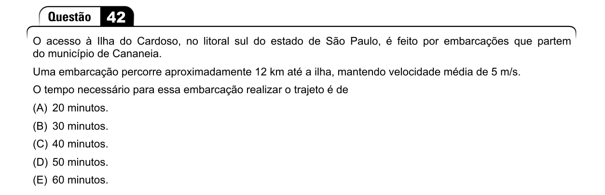
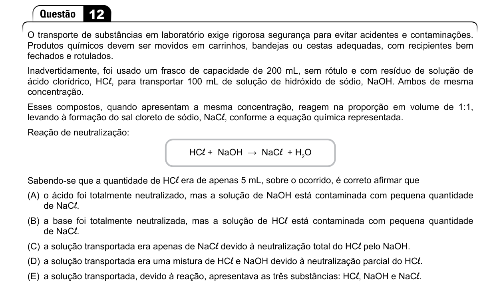
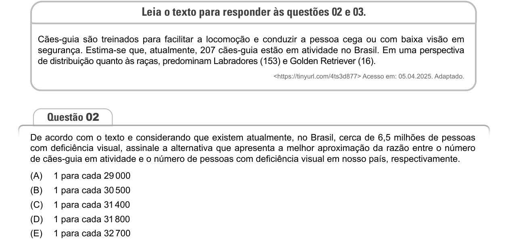
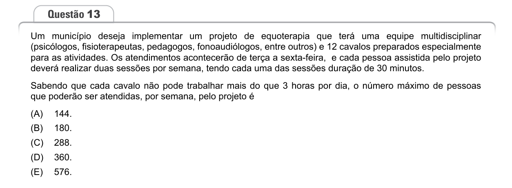
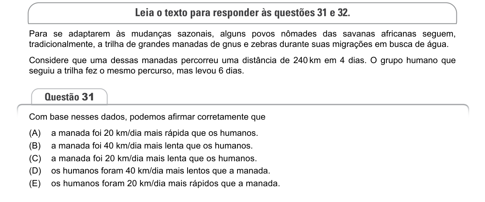
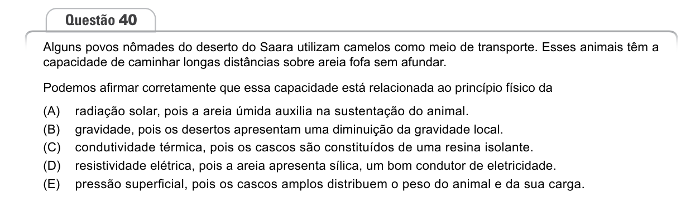
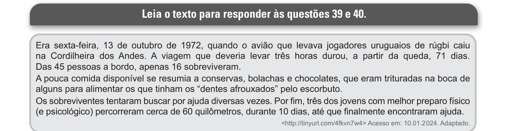
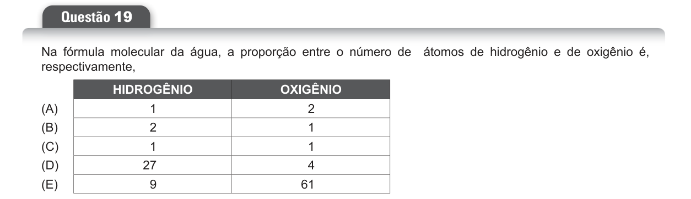

Abrir todos os gabaritos Ocultar gabaritos Recomeçar Imprimir
Os enunciados aparecem em recortes dos materiais fornecidos. Clique na imagem para ampliar. As respostas foram calculadas para este material; não são transcrições de gabaritos oficiais.
ETEC · 2º semestre de 2026 · questão 22
Selecione a letra correspondente às alternativas da imagem. Clique no enunciado para ampliar.
A B C D E
Conferir alternativa
🔽 Ver gabarito comentado Resposta: C Tempo do trecho 1 = 48 − 34 = 14 min.
Distância total = 6,3 + 6,4 + 5 = 17,7 km.
6,3 km → 14 min
17,7 km → t.
6,3t = 17,7 × 14 = 247,8.
t ≈ 39,33 min, portanto 30 ≤ t < 40.
ETEC · 2º semestre de 2026 · questão 23
Selecione a letra correspondente às alternativas da imagem. Clique no enunciado para ampliar.
A B C D E
Conferir alternativa
🔽 Ver gabarito comentado Resposta: E Tempo = 48 − 34 = 14 min.
14 × 60 = 840 s.
6,3 km = 6.300 m.
v = 6.300 ÷ 840 = 7,5 m/s.
ETEC · 2º semestre de 2026 · questão 42

Selecione a letra correspondente às alternativas da imagem. Clique no enunciado para ampliar.
A B C D E
Conferir alternativa
🔽 Ver gabarito comentado Resposta: C 12 km = 12.000 m.
t = d/v = 12.000 ÷ 5 = 2.400 s.
2.400 ÷ 60 = 40 minutos.
ETEC · 2º semestre de 2026 · questão 12

Selecione a letra correspondente às alternativas da imagem. Clique no enunciado para ampliar.
A B C D E
Conferir alternativa
🔽 Ver gabarito comentado Resposta: A Proporção 1:1 de volumes para a mesma concentração.
5 mL de HCl consomem 5 mL dos 100 mL de NaOH.
Sobram 100−5 = 95 mL equivalentes da solução inicial de base
forma-se NaCl.
O ácido é totalmente neutralizado e a base fica em excesso.
ETEC · 1º semestre de 2026 · questão 02

Selecione a letra correspondente às alternativas da imagem. Clique no enunciado para ampliar.
A B C D E
Conferir alternativa
🔽 Ver gabarito comentado Resposta: C Razão = 207/6.500.000.
Para uma unidade de cão-guia, divida ambos por 207.
6.500.000 ÷ 207 ≈ 31.401.
Aproximação: 1 para 31.400.
ETEC · 1º semestre de 2026 · questão 13

Selecione a letra correspondente às alternativas da imagem. Clique no enunciado para ampliar.
A B C D E
Conferir alternativa
🔽 Ver gabarito comentado Resposta: A Cada cavalo: 3 h = 180 min
180/30 = 6 sessões diárias.
12 cavalos × 6 sessões × 4 dias = 288 sessões.
Cada pessoa precisa de 2 sessões
288 ÷ 2 = 144 pessoas.
ETEC · 1º semestre de 2026 · questão 31

Selecione a letra correspondente às alternativas da imagem. Clique no enunciado para ampliar.
A B C D E
Conferir alternativa
🔽 Ver gabarito comentado Resposta: A Manada: 240 ÷ 4 = 60 km/dia.
Humanos: 240 ÷ 6 = 40 km/dia.
60 − 40 = 20 km/dia.
A manada foi 20 km/dia mais rápida.
ETEC · 1º semestre de 2026 · questão 43
Selecione a letra correspondente às alternativas da imagem. Clique no enunciado para ampliar.
A B C D E
Conferir alternativa
🔽 Ver gabarito comentado Resposta: B Massa total = 900 × 250 = 225.000 kg.
UA = 225.000 ÷ 450 = 500.
500 = 100 × taxa.
Taxa = 500 ÷ 100 = 5 UA/ha.
ETEC · 1º semestre de 2026 · questão 25
Selecione a letra correspondente às alternativas da imagem. Clique no enunciado para ampliar.
A B C D E
Conferir alternativa
🔽 Ver gabarito comentado Resposta: E 1.000.000 ÷ 200.000 = 5: a densidade de cones da águia é cerca de cinco vezes maior, não inferior.
O texto também indica visão tetracromática e sensibilidade UV.
A alternativa E corresponde à interpretação do texto.
ETEC · 1º semestre de 2026 · questão 40

Selecione a letra correspondente às alternativas da imagem. Clique no enunciado para ampliar.
A B C D E
Conferir alternativa
🔽 Ver gabarito comentado Resposta: E Pressão P = F/A.
Mantendo a força, aumentar a área reduz a pressão.
Patas amplas distribuem o peso sobre área maior, reduzindo o afundamento.
ETEC · 2º semestre de 2024 · questão 14
Selecione a letra correspondente às alternativas da imagem. Clique no enunciado para ampliar.
A B C D E
Conferir alternativa
🔽 Ver gabarito comentado Resposta: C P = F/A.
Com F constante, P × A = F, portanto são inversamente proporcionais.
Diminuir a área aumenta a pressão: C.
ETEC · 2º semestre de 2024 · questão 40

Selecione a letra correspondente às alternativas da imagem. Clique no enunciado para ampliar.
A B C D E
Conferir alternativa
🔽 Ver gabarito comentado Resposta: E Distância ≈ 60 km.
10 dias = 10 × 24 = 240 horas.
v = 60 ÷ 240 = 0,25 km/h.
Considera todo o intervalo de tempo, como pede a questão.
ETEC · 2º semestre de 2024 · questão 19

Selecione a letra correspondente às alternativas da imagem. Clique no enunciado para ampliar.
A B C D E
Conferir alternativa
🔽 Ver gabarito comentado Resposta: B A fórmula da água é H₂O.
Há 2 átomos de hidrogênio para cada 1 de oxigênio.
Razão H:O = 2:1.